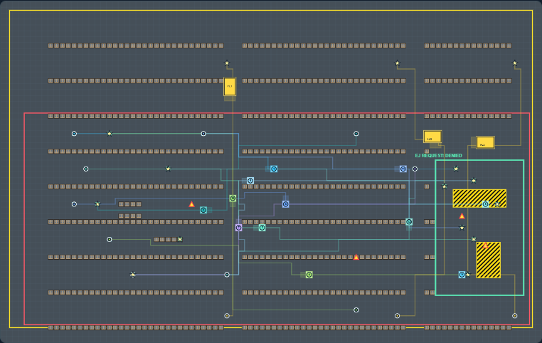

01 / 12THE SHARED FLOOR0:00–0:30
One floor.
Many destinations.
A robot finds a route. A fleet needs a plan. Explore what happens when everyone wants to move at once.
Click or drag a cell:
WAREHOUSE / 13 × 9 LIVE CLASSICAL PLANNER
robot destination blocked exploredTeaching simulation · computations run in your browser
Press Play. Watch the robots move at the same time.
ASK FOR ROUTES
ASK FOR A PLANNING ORDER
WHAT THE MODEL IS ASKED● ● ●
LLM writes routes→Parse the answer→Verify every route
A POSSIBLE LANGUAGE ROLE
Human instructionProposed planning constraintsClassical planner + independent checks
Research opportunities. These benefits were not tested by the paper. Preset instructions, no live LLM.
RULE-CONSTRAINED MULTI-AGENT PATH FINDING
A usable route must respect the operating rules of the space it crosses.

Open the interactive warehouse simulator ↗01
Allowed zones
Stay inside permitted areas.
02
Crossing priority
Yield to forklifts.
03
SCAN TO EXPLOREAccess restrictions
Respect handover rules.
or click to open
Next test: can an LLM turn written rules into correct planning constraints?
A related project demonstrator with synthetic geometry and simplified rules. Separate from the paper’s benchmark experiments. No validated factory deployment or safety certification.